Extend
Extend involves dancers moving forward from one tagging formation to the next. There are five eight-dancer tagging
formations, which, in order, are as follows:
- Double Pass Thru (Zero Tag)
- 1/4 Tag
- Ocean Waves (1/2 Tag)
- 3/4 Tag
- Completed Double Pass Thru (Full Tag)
Eight-dancer Tagging Formations
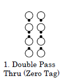
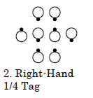
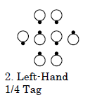
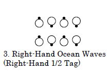
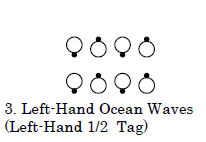
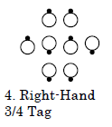
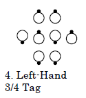
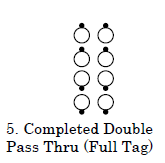
This call was originally named "Extend the Tag".
In 1988, the name was shortened to "Extend", without changing the dance action.
Starting formations The first four eight-dancer tagging formations (i.e., Double Pass Thru, 1/4 Tag, Ocean Waves,
and 3/4 Tag) and the corresponding four-dancer tagging formations, which are described below
Dance action Walk forward from one tagging formation to the next. Where possible, handedness is maintained, as
described in the comments below.
Ending formations The last four eight-dancer tagging formations (i.e., 1/4 Tag, Ocean Waves, 3/4 Tag, and
Completed Double Pass Thru) and the corresponding four-dancer tagging formations, which are described below.
Timing2
Styling All dancers should have their hands in ready dancing position for the formation resulting from the call
(couple handhold or Ocean Wave hand position).
Starting formation1/4 tag formation only.
[ Note: in 2016 this restriction was removed. ]
Dance action
Dancers in the wave release handholds and step forward to the couple they are
facing and form an ocean wave. If the original wave was right-handed, form a
right-hand wave. If the original wave was left-handed, form a left-hand wave.
Ending formationParallel Ocean Waves
Timing2
Styling
All dancers move forward smoothly during the call. Use ocean wave styling.
Teaching Tip
If you were a Center in the starting wave, you’ll be a Center in the ending wave.
If you were an End in the starting wave, you’ll be an End in the ending wave.
Stress that ALL dancers must move forward to keep the square from spreading out too far.
© Copyright 1994, 2000-2017 by
CALLERLAB Inc.,
The International Association of Square Dance Callers.
Permission to reprint, republish, and create derivative works
without royalty is hereby granted, provided this notice appears.
Publication on the Internet of derivative works without royalty is
hereby granted provided this notice appears. Permission to quote
parts or all of this document without royalty is hereby granted,
provided this notice is included. Information contained herein shall
not be changed nor revised in any derivation or publication.
The three middle tagging formations (i.e., 1/4 Tag, Ocean Waves, and 3/4 Tag) are either right- or lefthanded, as determined by the handedness of the Ocean Wave or Ocean Waves. From a 1/4 Tag or Ocean Waves, dancers walk forward to the ending formation that has the same handedness as the starting formation. From a Double Pass Thru, the resulting 1/4 Tag is right-handed.
When the starting formation is left-handed, callers sometimes give helpful words, e.g., "Extend to Left-Hand Waves". It is improper to use Extend to change handedness, e.g., "Heads Pass the Ocean, Extend to Left-Hand Waves".
From a 1/4 Tag, "Centers Extend" or "Centers Extend To The Outsides" should not be used, because those phrases wrongly imply that only the centers are active or that only the centers move. Everyone is active and everyone moves.
Asking only some of the dancers to Extend (e.g., Heads Pass The Ocean, Just The Boys Extend) is considered a Gimmick (see "Additional Detail: Commands: Gimmicks"). Another gimmick would be Head Ladies Chain 3/4, Lines of 3 Touch 1/4, All Extend (to a Column).
Extend is improper from Facing Lines or a Tidal Wave. From these formations, callers should use Step To A Wave or Step Thru (or Pass Thru, if a Right-Hand Tidal Wave) to have all dancers step forward.
Using Extend as a four-dancer call: Although Extend is usually called to all eight dancers, it is actually a fourdancer call related to the position of dancers as they Tag the Line. The dance action, timing, styling, and comments also apply to these four-dancer tagging formations. Such applications are rarely encountered at Mainstream and would probably require a workshop.
Four-dancer Tagging Formations
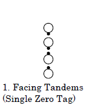 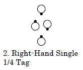 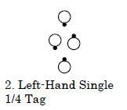 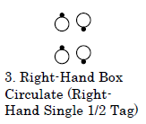 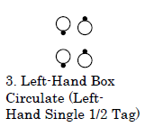 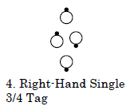 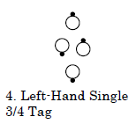 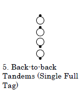
Note: A 1/4 (or 3/4) Tag formation is the same as two side-by-side Single 1/4 (or 3/4) Tag formations, because outside dancers move together to become a couple. See "Additional Detail: Dance Action: Square Breathing".
Extend is also proper (but quite unusual) from certain distorted Single 1/4 Tag formations where outside dancers are facing the backs of the center dancers rather than facing the handhold of the Mini-Wave. For example, Ends Fold and Everyone Extend is proper from an Ocean Wave but improper from a Two-Faced Line. For these applications to be proper, dancers not in the usual position must begin in a Tandem with another dancer.